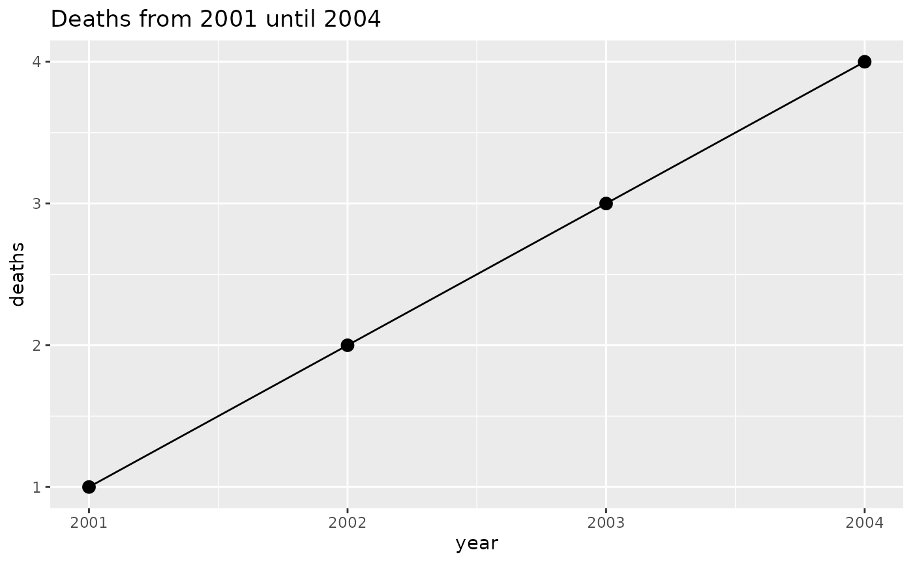
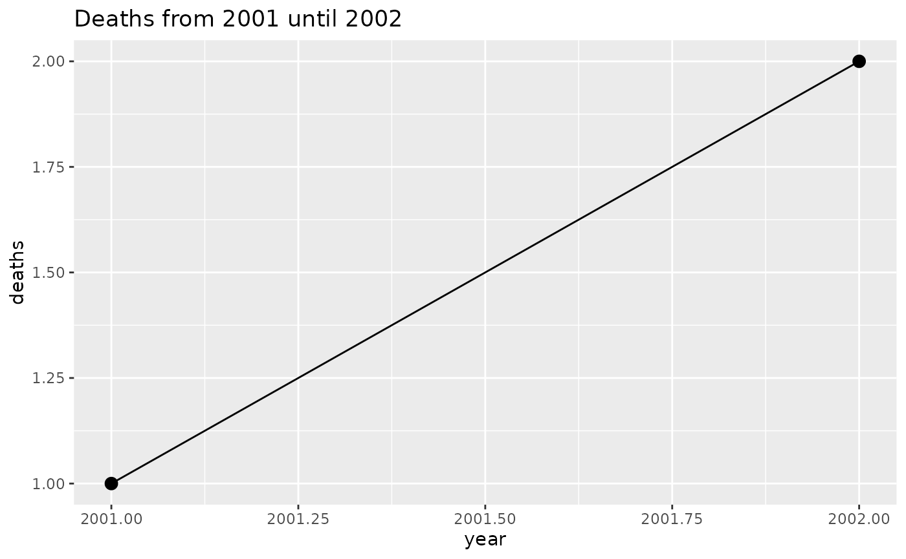
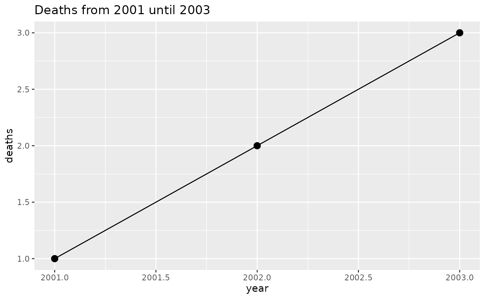

| Broad technical terms | |
| Object | Description |
| argset | A named list containing a set of arguments. |
| analysis |
These are the fundamental units that are scheduled in
|
| plan |
This is the overarching “scheduler”:
|
| Different types of plans | |
| Plan Type | Description |
| Single-function plan | Same action function applied multiple times with different argsets applied to the same datasets. |
| Multi-function plan | Different action functions applied to the same datasets. |
| Plan Examples | |
| Plan Type | Example |
| Single-function plan | Multiple strata (e.g. locations, age groups) that you need to apply the same function to to (e.g. outbreak detection, trend detection, graphing). |
| Single-function plan | Multiple variables (e.g. multiple outcomes, multiple exposures) that you need to apply the same statistical methods to (e.g. regression models, correlation plots). |
| Multi-function plan | Creating the output for a report (e.g. multiple different tables and graphs). |
Philosophy
In brief, we work within the mental model where we have one (or more) datasets and we want to run multiple analyses on these datasets. These multiple analyses can take the form of:
-
Single-function plans: One action function (e.g.
table_1) called multiple times with different argsets (e.g.year=2019,year=2020). -
Multi-function plans: Multiple action functions (e.g.
table_1,table_2) called multiple times with different argsets (e.g.table_1:year=2019, while fortable_2:year=2019andyear=2020)
By demanding that all analyses use the same data sources we can:
- Be efficient with requiring the minimal amount of data-pulling (this only happens once at the start).
- Better enforce the concept that data-cleaning and analysis should be completely separate.
By demanding that all analysis functions only use two arguments (data and argset) we can:
- Reduce mental fatigue by working within the same mental model for each analysis.
- Make it easier for analyses to be exchanged with each other and iterated on.
- Easily schedule the running of each analysis.
By including all of this in one Plan class, we can easily maintain a good overview of all the analyses (i.e. outputs) that need to be run.
Examples
We now provide a simple example of a single-function plan that shows how a person can develop code to provide graphs for multiple years. More examples are provided inside the vignette Adding Analyses to a Plan.
library(ggplot2)
library(data.table)
# We begin by defining a new plan
p <- plnr::Plan$new()
# We add sources of data
# We can add data directly
p$add_data(
name = "deaths",
direct = data.table(deaths=1:4, year=2001:2004)
)
# We can add data functions that return data
p$add_data(
name = "ok",
fn = function() {
3
}
)
# We can then add a simple analysis that returns a figure.
# Because this is a single-analysis plan, we begin by adding the argsets.
# We add the first argset to the plan
p$add_argset(
name = "fig_1_2002",
year_max = 2002
)
# And another argset
p$add_argset(
name = "fig_1_2003",
year_max = 2003
)
# And another argset
# (don't need to provide a name if you refer to it via index)
p$add_argset(
year_max = 2004
)
# Create an analysis function
# (takes two arguments -- data and argset)
fn_fig_1 <- function(data, argset){
plot_data <- data$deaths[year<= argset$year_max]
q <- ggplot(plot_data, aes(x=year, y=deaths))
q <- q + geom_line()
q <- q + geom_point(size=3)
q <- q + labs(title = glue::glue("Deaths from 2001 until {argset$year_max}"))
q
}
# Apply the analysis function to all argsets
p$apply_action_fn_to_all_argsets(fn_name = "fn_fig_1")
# How many analyses have we created?
p$x_length()## [1] 3
# Examine the argsets that are available
p$get_argsets_as_dt()## name_analysis index_analysis year_max
## <char> <int> <list>
## 1: fig_1_2002 1 2002
## 2: fig_1_2003 2 2003
## 3: 7581e3b8-92e5-48c1-b0b1-1998ae9f7174 3 2004
# When debugging and developing code, we have a number of
# convenience functions that let us directly access the
# data and argsets.
# We can directly access the data:
p$get_data()## $deaths
## deaths year
## <int> <int>
## 1: 1 2001
## 2: 2 2002
## 3: 3 2003
## 4: 4 2004
##
## $ok
## [1] 3
##
## $hash
## $hash$current
## [1] "30beabc342f7f5cd1bcae9ce9b1ddfbe"
##
## $hash$current_elements
## $hash$current_elements$deaths
## [1] "82519debaef80054a7b2ed512f8dfb94"
##
## $hash$current_elements$ok
## [1] "96455a3f86beb595df04fb314776bd1f"
# We can access the argset by index (i.e. first argset):
p$get_argset(1)## $year_max
## [1] 2002
# We can also access the argset by name:
p$get_argset("fig_1_2002")## $year_max
## [1] 2002
# We can acess the analysis (function + argset) by both index and name:
p$get_analysis(1)## $argset
## $argset$year_max
## [1] 2002
##
## $argset$index_analysis
## [1] 1
##
##
## $fn_name
## [1] "fn_fig_1"
# We recommend using plnr::is_run_directly() to hide
# the first two lines of the analysis function that directly
# extracts the needed data and argset for one of your analyses.
# This allows for simple debugging and code development
# (the programmer would manually run the first two lines
# of code and then run line-by-line inside the function)
fn_analysis <- function(data, argset){
if(plnr::is_run_directly()){
data <- p$get_data()
argset <- p$get_argset("fig_1_2002")
}
# function continues here
}
# We can run the analysis for each argset (by index and name):
p$run_one("fig_1_2002")
p$run_one("fig_1_2003")
p$run_one(3)
fn_name or fn?
In the functions add_analysis, add_analysis_from_df, apply_action_fn_to_all_argsets, and add_data there is the option to use either fn_name or fn to add the function.
We use them as follows:
library(ggplot2)
library(data.table)
# We begin by defining a new plan and adding data
p <- plnr::Plan$new()
p$add_data(direct = data.table(deaths=1:4, year=2001:2004), name = "deaths")
# We can then add the analysis with `fn_name`
p$add_analysis(
name = "fig_1_2002",
fn_name = "fn_fig_1",
year_max = 2002
)
# Or we can add the analysis with `fn_name`
p$add_analysis(
name = "fig_1_2003",
fn = fn_fig_1,
year_max = 2003
)
p$run_one("fig_1_2002")
p$run_one("fig_1_2003")
The difference is that with fn_name we provide the name of the function (e.g. fn_name = "fn_fig_1") while with fn we provide the actual function (e.g. fn = fn_fig_1).
It is recommended to use fn_name because fn_name calls the function via do.call which means that RStudio debugging will work properly. The only reason you would use fn is when you are using function factories.
Hash
A hash function is used to map data of arbitrary size to fixed-size values. We can use this to uniquely identify datasets.
The Plan method get_data will automatically compute the spookyhash via digest::digest for:
- The entire named list (‘current’)
- Each element in the named list (‘current_elements’)
library(data.table)
# We begin by defining a new plan and adding data
p1 <- plnr::Plan$new()
p1$add_data(direct = data.table(deaths=1:4, year=2001:2004), name = "deaths")
p1$add_data(direct = data.table(deaths=1:4, year=2001:2004), name = "deaths2")
p1$add_data(direct = data.table(deaths=1:5, year=2001:2005), name = "deaths3")
# The hash for 'deaths' and 'deaths2' is the same.
# The hash is different for 'deaths3' (different data).
p1$get_data()$hash$current_elements## $deaths
## [1] "82519debaef80054a7b2ed512f8dfb94"
##
## $deaths2
## [1] "82519debaef80054a7b2ed512f8dfb94"
##
## $deaths3
## [1] "d740b5c163d702dde31061bcd9e00716"
# We begin by defining a new plan and adding data
p2 <- plnr::Plan$new()
p2$add_data(direct = data.table(deaths=1:4, year=2001:2004), name = "deaths")
p2$add_data(direct = data.table(deaths=1:4, year=2001:2004), name = "deaths2")
# The hashes for p1 'deaths', p1 'deaths2', p2 'deaths', and p2 'deaths2'
# are all identical, because the content within each of the datasets is the same.
p2$get_data()$hash$current_elements## $deaths
## [1] "82519debaef80054a7b2ed512f8dfb94"
##
## $deaths2
## [1] "82519debaef80054a7b2ed512f8dfb94"
# The hash for the entire named list is different for p1 vs p2
# because p1 has 3 datasets while p2 only has 2.
p1$get_data()$hash$current## [1] "a62de2f423eeb9e516442ffcce641dc3"
p2$get_data()$hash$current## [1] "505ea771d16df0c71946a0276a4bd4d0"